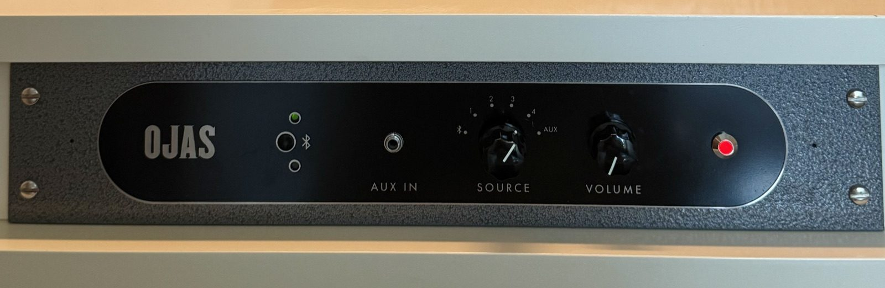
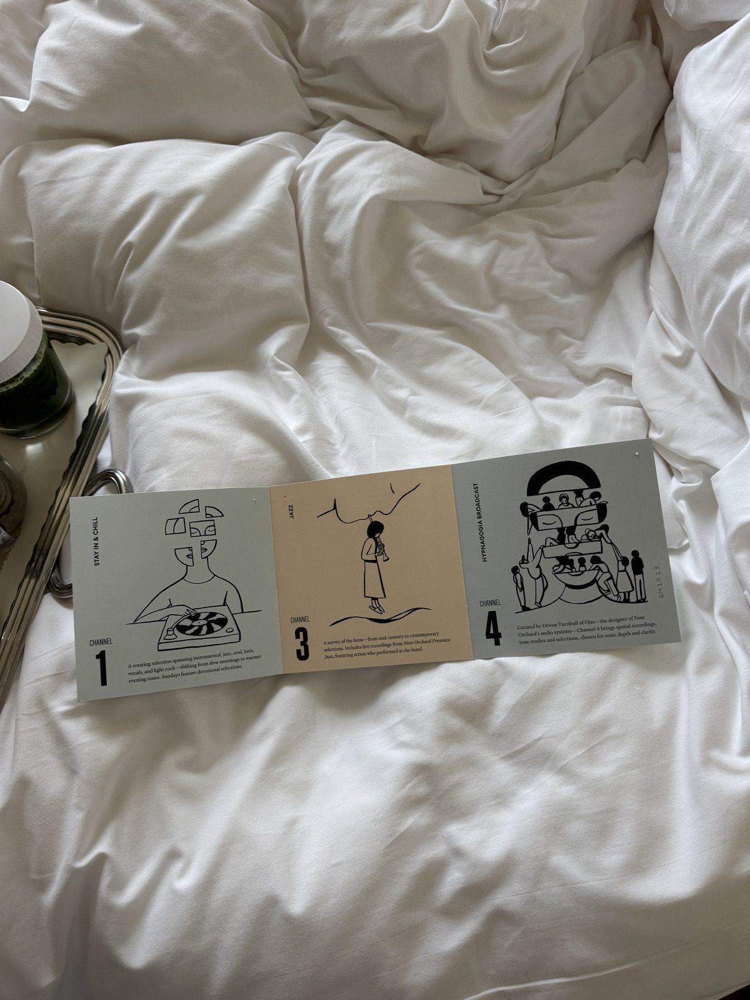
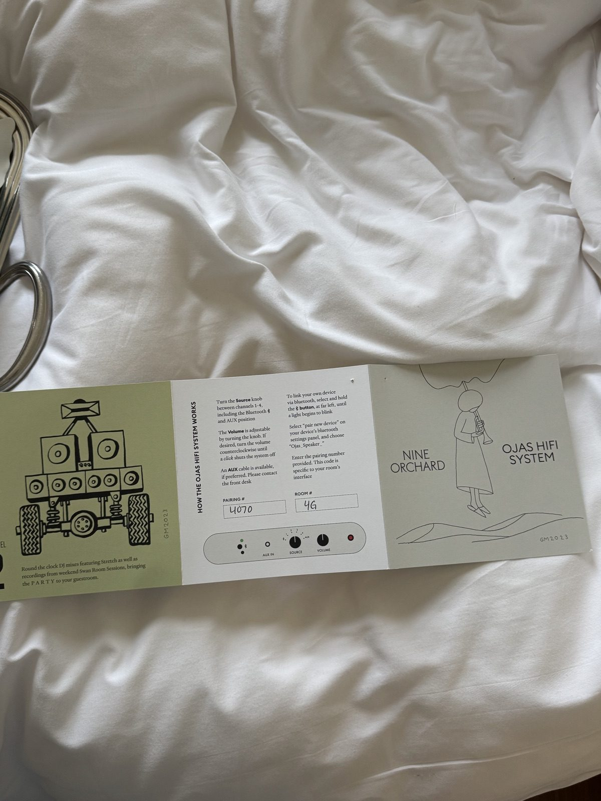

Last night I stayed at the Nine Orchard in the LES. In my room was a simple Ojas speaker (Ojas.nyc) paired with several analogue knobs in a control panel. One was volume. Another was a switch to four channels. On those four channels were perfect, predefined playlists that they control on their end (details on playlists in the picture). Each one was perfectly the type of song I would want associated with the vibe, no misses.
I would love more knobs in my life where there are strictly four choices. And when that choice is made, it is a good one. Maybe even two choices. Or one.

